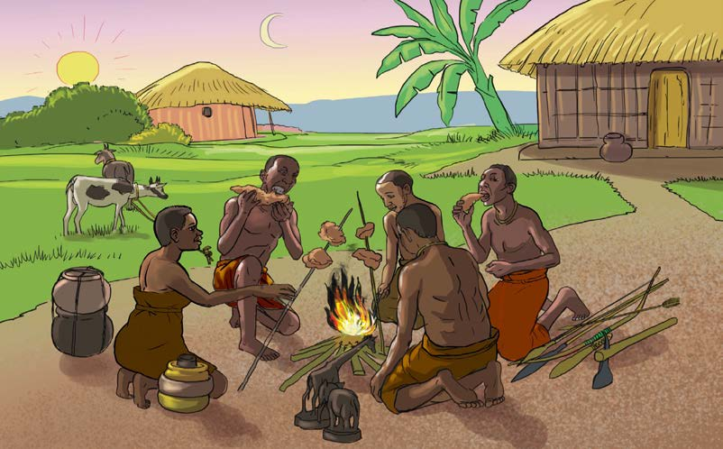

Shughuli za uchumi za jamii kabla ya ukoloni
Siku moja kiongozi wa jamii ya wakundi alifanya sherehe kubwa ambayo alialika watu kutoka jamii zilizojishughulisha na shughuli mbalimbali za uchumi. Hafla hii ilikuwa kwa ajili ya kuzitambua shughuli za kiuchumi zilizofanyika katika jamii zao na maadili yake. Wageni waalikwa walikaa karibu na moto mkubwa wakichoma nyama huku wakizungumzia kuhusu shughuli za uchumi katika jamii zao kabla ya kuja kwa wakoloni. Kielelezo namba 1, kinawasilisha wageni toka jamii mbalimbali na bidhaa zitokanazo na shughuli zao za uchumi.

Shughuli za uchumi katika kilimo
Mgeni wa kwanza kuzungumza alikuwa mzee Mwaka ambaye alizungumzia kuhusu shughuli za kilimo. Mzee Mwaka alianza kwa kuelezea kwamba:
Shughuli ya uchumi katika jamii yetu ilikuwa kilimo. Shughuli za uchumi za kilimo zilitofautiana katika jamii za wakulima kulingana na mazingira, maarifa na ujuzi wa stadi za kilimo na